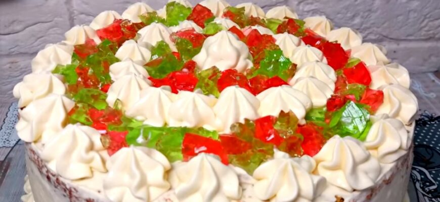

Бісквітний торт з желе
Для приготування вам потрібні такі інгредієнти:
- Цукор: 150г
- Борошно: 180г
- Яйця: 4шт
- Молоко: 6 ст.л.
- Желе: 2 пакетики
- Розпушувач: 1 ч.л.
Для приготування крему необхідно:
- Цукров: 150г
- Молоко: 50мл
- Желатин: 25мг
- Сир вершковий: 400г
- Сметана: 500мл
Процес приготування торта
Заливаємо желе гарячою водою у різних ємностях. Можна приготувати желе із соку або компотів.
Яйця збиваємо із цукром до білої маси, вливаємо молоко, додаємо ванілін.
Борошно просіюємо та всипаємо в тісто частину, перемішуємо. Всипаємо другу частину борошна та вимішуємо.
Форму для випікання застеляємо пергаментом і виливаємо тісто.
Духовку розігріваємо до 180 градусів та випікаємо 20 – 25 хвилин. Готовність перевіряйте зубочисткою.
Желатин заливаємо гарячим молоком і залишаємо набухати.
Сметану змішуємо з вершковим сиром і збиваємо, всипаємо ванілін та цукор, збиваємо до легкості.
Застигле желе ріжемо на кубики, трохи залишаємо для прикраси.
Бісквіт розрізаємо на 2 коржі.
Желатин розмішуємо з половиною крему, додаємо шматочки желе і швидко перемішуємо.
Збираємо торт у роз’ємному кільці. На корж викладаємо крем із желе, зверху другий корж. Ставимо на ніч у холодильник.
Робимо крем із сметани та цукру та обмазуємо торт з усіх боків кремом та другою частиною крему, який ви залишили прикрашаємо верх. Посипаємо шматочками желе. Смачного!